▲ 국내 사양 기아 카니발 하이브리드(KA4 부분변경). 국내외 시승기 12편의 평가를 모아 정리했다 ⓒ Damian B Oh, Wikimedia Commons (CC BY-SA 4.0)
2026년 8월 국산차 판매 3위(4,186대, 오토트리뷴 집계). 미니밴 한 차종이 세단·SUV 사이에서 이 순위를 지키는 건 카니발이 유일하다. 그렇다면 실제로 타 본 사람들은 이 차를 어떻게 평가했을까. CarPrism은 2023년 말 부분변경(더 뉴 카니발) 이후 나온 국내 시승기 6편과 해외 리뷰 6편, 오너 데이터 2종을 모아 칭찬과 지적이 어디서 겹치는지 다시 정리했다. 이 기사는 여러 매체의 시승 결과를 취합·재구성한 종합 기사이며, CarPrism이 직접 시승한 기록은 아니다.
시승기 대부분은 하이브리드를 다뤘다. 파워트레인(1.6 터보 하이브리드·3.5 가솔린)은 2023년 부분변경 이후 현행 2027년형(2026년 8월 27일 연식변경)까지 그대로이므로, 주행 평가는 지금 사는 차에도 대체로 적용된다. 다만 해외 매체가 탄 차는 출력 표기, 구동 방식, 파워트레인 구성이 국내 사양과 다를 수 있어 따로 표시했다.
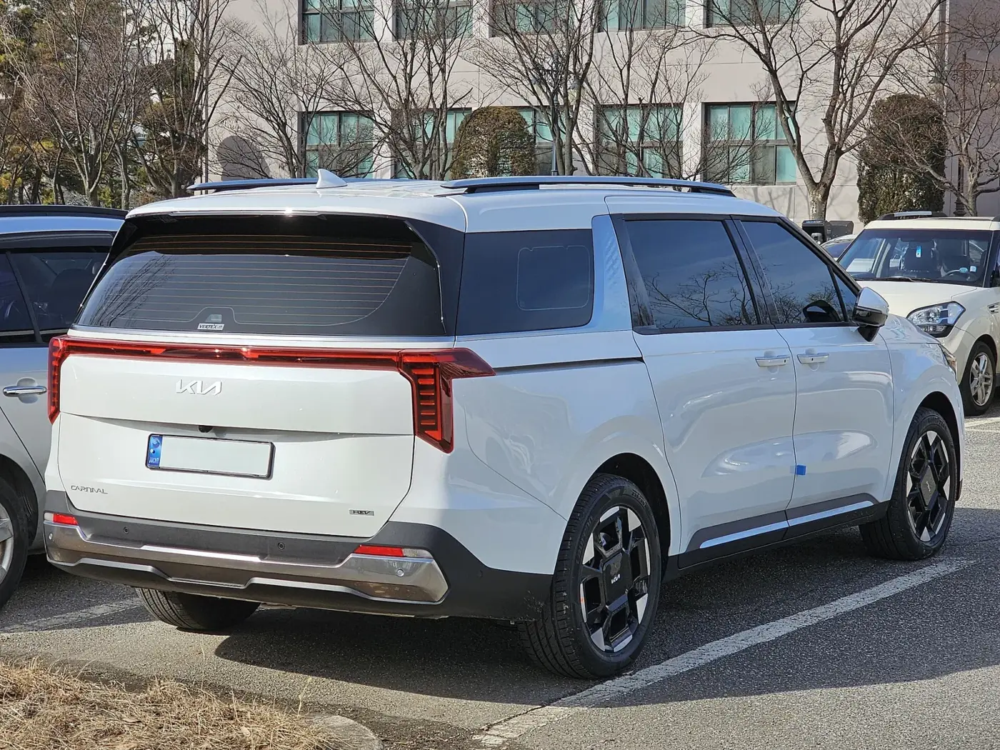
▲ 국내 사양 카니발 하이브리드(KA4 부분변경)의 뒷모습. 2027년형부터 LED 리어 콤비네이션 램프가 전 트림 기본이다 ⓒ Damian B Oh, Wikimedia Commons (CC BY-SA 4.0)
1. 매체별 한 줄 평 — 12편을 한 표로
국내 시승기는 대부분 2023년 12월 하이브리드 첫 출시 직후 나왔고, 해외 리뷰는 2025~2026년형 북미·호주 사양을 다뤘다. 시승 모델과 구간이 제각각이라 수치를 단순 비교하기는 어렵지만, 좋았던 점과 아쉬운 점만 추려 보면 방향은 꽤 비슷하다.
| 매체 | 시승 모델 | 좋았던 점 | 아쉬운 점 |
|---|---|---|---|
| 모터그래프 | 하이브리드 vs 당시 디젤 비교 | 가속에서 디젤보다 낫고, 고질적이던 승차감 불만이 대부분 해소. 효율은 디젤보다 약 13% 높음 | 고회전에서 엔진음이 거슬리고, 뒷좌석 헤드레스트로 진동이 전해짐 |
| 카가이 | 하이브리드 9인승, 약 400km | 정숙성, 고속도로 구간 실연비 17.3km/L | 추월 가속 부족, 모터→엔진 전환 때 반응 지연, 2열 편안함은 더 좋아질 여지 |
| 탑라이더 | 하이브리드 7인승, 19인치 휠 | 디젤급 연비, 조용한 실내, 묵직해진 승차감, 회생제동 단계 조절 | 출발 가속이 더딤, 재가속 때 변속 지연, 연속 코너에서 롤 |
| 더팩트 | 하이브리드, 고양~파주 82km | 전기 구동 전환이 자연스러움, 낮은 실내 소음, 실연비 17.6km/L | 에코 모드 가속이 둔함 |
| 아시아투데이 | 하이브리드 7인승(2+2+3) | 세단 같은 주행 질감, 성인이 앉을 만한 3열, 조용한 실내 | 별도 지적 없음 |
| 지디넷코리아 | 하이브리드 7인승 시그니처, 164km | 디젤 수준 효율, E-라이드·E-핸들링으로 승차감·안정감 개선 | 기존 3.5 가솔린보다 낮은 출력 |
| MotorWeek(미국) | 2025년형 하이브리드 LXS(기본 트림) | 출력 수치에 비해 경쾌한 가속, 자연스러운 브레이크 감각, E-핸들링이 언더스티어를 거의 지움 | 코너에서 차체 기울어짐, 0→60mph 8.0초로 V6보다 0.8초 느림 |
| The Drive(미국) | 2025년형 하이브리드 SX 프레스티지 | 가볍고 정확한 조향, 좋은 브레이크 감각, 매끄러운 엔진·모터 전환, 2열 VIP 라운지 시트 | 터치식 공조 조작, 단단한 서스펜션, 2열 VIP 시트는 평평하게 안 접힘 |
| Consumer Reports(미국) | 2026년형 하이브리드 | 연비 31mpg(약 13.2km/L)로 V6 대비 큰 개선, 조용한 실내, 시에나보다 편한 3열 | 2열 허벅지 지지 부족, 2열 탈거 번거로움, 다이얼 변속기 적응 필요, 시에나보다 낮은 연비 |
| Edmunds(미국) | 2025년형 하이브리드 SX 프레스티지(장기 시승차) | 60→0mph 제동거리 134피트로 크라이슬러 퍼시피카 하이브리드보다 짧음 | 0→60mph 9.2초로 미니밴 기준으로도 느림, 초기 실연비 27.7mpg로 기대 이하 |
| CarExpert(호주) | 2025년형 GT-Line 하이브리드 | 매끄러운 파워트레인, ISOFIX 5개 실내, 연비 | 과속 경고 장치가 성가심, 스페어 타이어 없이 수리 키트만, 디젤이 가성비는 더 나음 |
| Drive(호주) | 2025년형 GT-Line 하이브리드 | 매끄러운 하이브리드 파워트레인, 넓은 실내와 승용차에 가까운 주행감, 주행 연비 5.7L/100km | 짧은 점검 주기, 스페어 타이어 없음, 과한 속도 제한·운전자 모니터링 경고. 리뷰 당시 하이브리드는 최상위 GT-Line에만 있었음(호주 사양) |
📍 해외 사양은 국내와 무엇이 다른가
하이브리드 시스템(1.6 터보 + 54kW 모터 + 6단 자동)은 국내와 같다. 미국 매체는 이를 242마력(미국 SAE 기준)으로 표기하고, 국내 공식 제원은 245마력이다. 가솔린은 국내가 3.5 직분사 294마력인 반면, 미국 판매 3.5 V6는 287마력(미국 표기, MotorWeek)으로 적혀 있다. 호주는 3.5 가솔린·2.2 디젤·1.6 하이브리드를 함께 팔았고, Drive 리뷰 시점에는 하이브리드가 최상위 GT-Line에만 있었다. 해외 매체가 탄 트림도 제각각이라 MotorWeek는 기본 트림(LXS), The Drive와 Edmunds는 최상위 SX 프레스티지였다. 국내에서는 2026년형(2025년 8월)부터 디젤이 빠지고 가솔린·하이브리드 두 가지만 남았다.
2. 합의도 — 몇 개 매체가 같은 말을 했나
매체 12곳의 평가를 항목별로 세어 보면, 카니발 하이브리드의 성격이 선명해진다. 효율·정숙성·승차감은 국내외가 거의 한목소리로 칭찬했고, 가속은 국내외가 같이 지적했다. 반대로 공조 조작계나 2열 시트 마감 같은 세부 불만은 주로 해외 매체에서 나왔다.
| 평가 | 항목 | 언급 수 | 언급 매체 |
|---|---|---|---|
| 👍 | 연비·효율이 좋다 | 9 | 모터그래프, 카가이, 탑라이더, 더팩트, 아시아투데이, 지디넷, CR, CarExpert, Drive |
| 👍 | 실내가 조용하다 | 6 | 카가이, 탑라이더, 더팩트, 아시아투데이, CR, CarExpert |
| 👍 | 승차감이 좋아졌다 | 6 | 모터그래프, 탑라이더, 아시아투데이, 더팩트, 지디넷, CR |
| 👍 | 엔진·모터 전환이 매끄럽다 | 5 | 탑라이더, 더팩트, The Drive, CarExpert, Drive |
| 👎 | 출발·재가속이 굼뜨다 | 4 | 카가이, 탑라이더, 더팩트(에코 모드), Edmunds |
| 👎 | 2열 시트에 아쉬움 | 4 | 모터그래프(헤드레스트 진동), 카가이, The Drive, CR |
| 👎 | 터치식 공조·조작계 불편 | 2 | The Drive, CR |
| 👎 | 시에나보다 연비가 낮다 | 3 | The Drive, CR, Edmunds |
| 👎 | 코너에서 차체 롤 | 2 | 탑라이더, MotorWeek |
| 👎 | 스페어 타이어 없음(호주 하이브리드) | 2 | CarExpert, Drive |
눈여겨볼 대목은 '느리다'는 평가가 계측값에서도 엇갈렸다는 점이다. 하이브리드의 0→60mph(약 96km/h) 기록이 MotorWeek 8.0초(2025년형 기본 트림), Consumer Reports 8.5초(2026년형), Edmunds 9.2초(2025년형 SX 프레스티지)로 1초 넘게 벌어졌다. 트림별 무게와 측정 조건이 달라 단순 비교는 어렵다. 공통점은 풀가속보다 정차 후 출발, 고속도로 추월처럼 즉각 반응이 필요한 순간에 굼뜨다는 것이다. 카가이는 배터리가 바닥났을 때 힘이 더 달린다고 적었다.
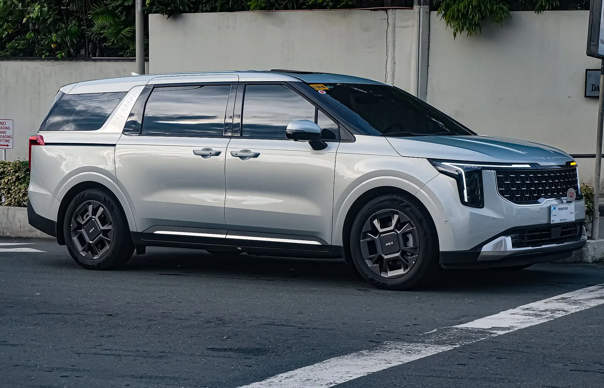
▲ 필리핀 판매 사양 카니발 1.6T 하이브리드의 옆모습. 전장 5,155mm, 휠베이스 3,090mm의 차체를 1.6 터보 하이브리드가 움직인다 ⓒ Ethan Llamas, Wikimedia Commons (CC BY-SA 4.0)
3. 하이브리드 vs 3.5 가솔린 — 공인 연비, 시승 연비, 오너 실연비
디젤이 빠진 지금 선택지는 두 개다. 1.6 터보 하이브리드는 엔진 180마력에 54kW(약 72마력) 모터를 더해 시스템 245마력·37.4kgf·m를 내고, 3.5 가솔린은 294마력·36.2kgf·m다. 최고출력은 가솔린이 높지만 최대토크는 하이브리드가 조금 앞선다. 모터그래프는 하이브리드의 최대토크가 넓은 회전 구간(1,500~4,500rpm)에서 나와 일상 가속이 오히려 여유 있다고 봤다.
| 항목 | 1.6 터보 하이브리드 | 3.5 가솔린 |
|---|---|---|
| 최고출력 | 시스템 245마력 (엔진 180마력 + 모터 54kW) | 294마력 / 6,400rpm |
| 최대토크 | 시스템 37.4kgf·m | 36.2kgf·m / 5,000rpm |
| 변속기 | 6단 자동 | 8단 자동 |
| 공인 복합연비 | 13.0~14.0km/L | 8.7~9.0km/L |
| CO₂ 배출 | 116~125g/km | 189~196g/km |
| 차체 | 전장 5,155 / 전폭 1,995 / 전고 1,775(가솔린)·1,785(하이브리드), 하이루프 2,045 / 휠베이스 3,090mm | |
연비는 어디서 재느냐에 따라 폭이 컸다. 짧은 구간을 부드럽게 달린 국내 시승기는 공인 연비를 크게 웃돌았고, 정체 구간이 섞이거나 가속을 많이 한 경우엔 12km/L 안팎으로 내려왔다. 수천~수만 명이 쌓은 오너 기록은 그 중간, 공인 연비 근처에 모였다.
| 구분 | 출처·조건 | 연비 |
|---|---|---|
| 공인 | 국내 복합(인승·휠별) | 13.0~14.0km/L |
| 미국 EPA 복합 | 33mpg ≈ 14.0km/L | |
| 국내 시승 | 더팩트 · 82km 국도·시내 | 17.6km/L |
| 카가이 · 고속도로 118km 구간 | 17.3km/L (야간 복귀 구간 15km/L) | |
| 아시아투데이 · 약 80km | 15.0km/L | |
| 지디넷 · 164km 정체 포함 | 12.5km/L | |
| 탑라이더 · 82km, 7인승 19인치 | 12.0km/L | |
| 해외 시승 | Drive(호주) · 일주일 주행 | 5.7L/100km ≈ 17.5km/L |
| CarExpert(호주) · 주행 평균 | 6.8L/100km ≈ 14.7km/L | |
| Consumer Reports(미국) · 자체 종합 | 31mpg ≈ 13.2km/L | |
| The Drive(미국) · 적극적 주행 | 약 28mpg ≈ 11.9km/L | |
| Edmunds(미국) · 장기 시승 초기 | 27.7mpg ≈ 11.8km/L | |
| 오너 실연비 | 마이클 앱 오너 14,331명 평균(앱 기준일 2026.9.25, 9.27 조회) | 13.79km/L |
| 같은 데이터 월별(2026년 4~8월) | 12.83(7월)~14.02km/L(4월) |
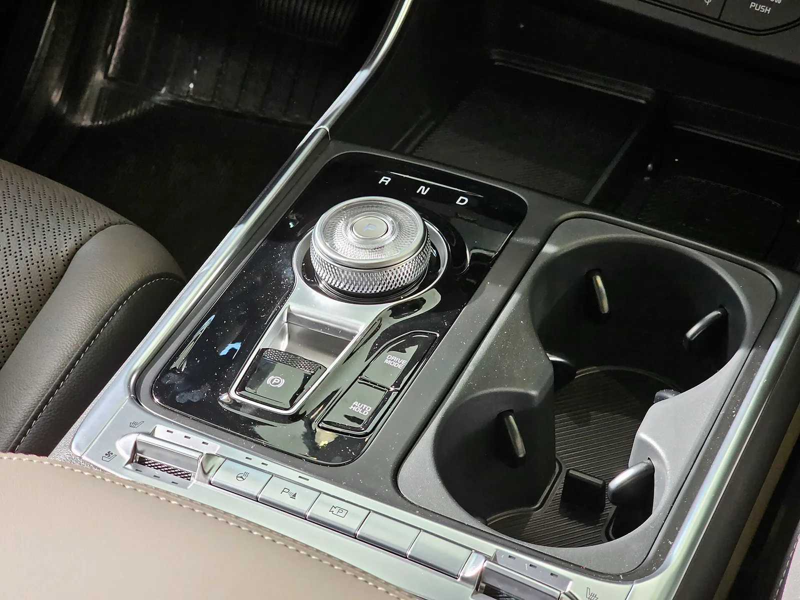
▲ 부분변경 카니발 센터콘솔의 다이얼식 변속기와 컵홀더. Consumer Reports는 다이얼 변속기에 적응 시간이 필요하다고 지적했다 ⓒ Damian B Oh, Wikimedia Commons (CC BY 4.0)
오너 데이터에서 눈에 띄는 건 여름철 하락이다. 4월 14.02km/L였던 월 평균이 에어컨을 많이 쓰는 7월 12.83km/L까지 내려갔다가 8월 13.05km/L로 다시 올라왔다. 겨울 난방철에도 비슷한 하락을 감안하는 편이 현실적이다.
하이브리드 추가금 455만원, 몇 년이면 회수되나
같은 앱(기준일 2026년 9월 25일)의 3.5 가솔린(부분변경 KA4) 오너 17,371명 평균 실연비는 7.84km/L로 공인 9.0km/L의 87% 수준이었다. 앱이 제시한 연 2만km 기준 연간 유류비는 가솔린 약 473만원, 하이브리드 약 269만원(휘발유 리터당 1,856원 기준)이다. 차이는 연 약 204만원이다.
✅ CarPrism 단순 계산 — 하이브리드 추가금 회수 기간
· 9인승 하이브리드 추가금: 455만원(7인승 450만원)
· 연 2만km 주행 시 유류비 차이: 약 204만원 → 약 2.2년
· 연 1만km 주행 시 유류비 차이: 약 102만원 → 약 4.5년
· 취득세·자동차세·보험료·잔존가치 차이는 뺀 계산이다. 모터그래프가 출시 당시 하이브리드 추가금을 메우려면 10년 정도 타야 한다고 계산한 건 연비가 좋은 디젤과 비교한 결과(당시 추가금 260만원)라 지금 상황과는 다르다.
4. 7·9인승, 2열 시트, 3열 — 어떤 구성이 맞나
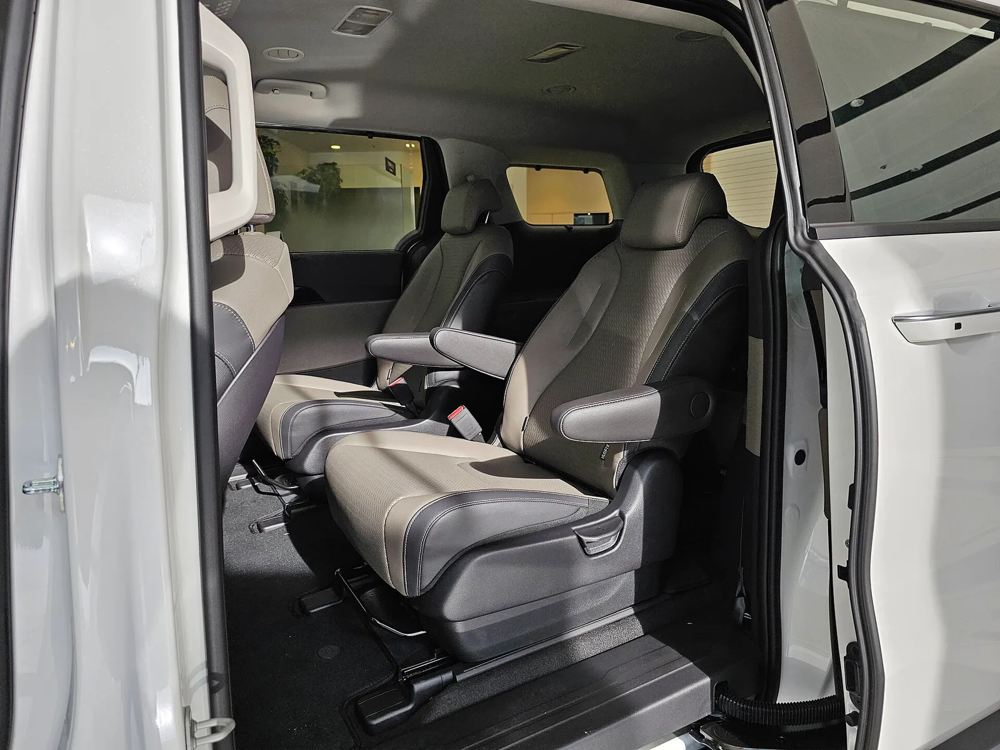
▲ 슬라이딩 도어를 열면 보이는 부분변경 카니발의 2열 독립 시트. 팔걸이와 바닥의 슬라이딩 레일이 보인다 ⓒ Damian B Oh, Wikimedia Commons (CC BY 4.0)
현행 4세대 카니발에는 11인승이 없다. 일반 모델은 7인승과 9인승, 하이리무진은 4·7·9인승이다. 인승 선택에서 가장 실용적인 차이는 고속도로 버스전용차로다. 도로교통법 시행령 별표 1은 고속도로 버스전용차로를 탈 수 있는 차를 9인승 이상 승용·승합자동차로 정하고, 승용차와 12인승 이하 승합차는 6명 이상 탄 경우로 한정한다. 7인승은 몇 명이 타도 안 된다(중고 3세대 11인승과의 차이는 카니발 9인승 vs 11인승 정리 참고). 명절·주말 장거리가 잦은 가족이라면 이 조건 하나로 9인승을 고르는 경우가 많다.
2열 시트 평가는 칭찬과 불만이 함께 나왔다. The Drive는 미국 사양 2열 'VIP 라운지' 시트(국내 프리미엄 릴렉션 시트와 비슷한 다리받침형 리클라이닝 시트)의 편안함을 높이 샀지만, 등받이가 평평하게 접히지 않아 짐 공간을 만들 때 불리하다고 했다. Consumer Reports는 2열 머리 공간은 넉넉하지만 허벅지 지지가 부족하고, 짐칸을 넓히려고 2열을 떼어내기가 번거롭다고 지적했다. 국내에서는 카가이가 장거리에서 2열의 편안함은 더 다듬을 여지가 있다고 평했다.
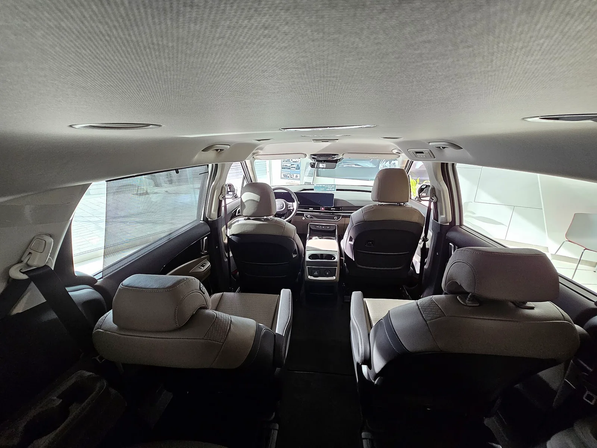
▲ 3열 쪽에서 앞으로 바라본 카니발 실내. 2열 독립 시트 사이 통로로 3열에 드나든다 ⓒ Damian B Oh, Wikimedia Commons (CC BY 4.0)
3열은 의외로 호평이 많았다. 아시아투데이는 키 178cm 기자가 3열에 앉아도 무릎·머리 공간이 충분했다고 전했고, Consumer Reports는 3열이 낮고 단단하지만 꽤 넓어 토요타 시에나보다 편하다고 평가했다. 짐 공간은 국내 공식 수치를 확인하지 못해, CarExpert와 Drive가 기아 호주 자료로 인용한 호주 8인승 사양 수치(3열 사용 시 627L, 3열을 접으면 2,827L, VDA 기준)를 참고로만 적는다. 기아 국내 공식 제원표에는 적재 용량이 나와 있지 않다.
| 구성 | 2열 | 버스전용차로 | 이런 가족에게 |
|---|---|---|---|
| 9인승 | 프리미엄 릴렉션 시트 미적용 | 6명 이상 탑승 시 가능 | 조부모 동반·다인원 이동, 명절 장거리가 잦은 집 |
| 7인승 | 프리미엄 릴렉션 시트(노블레스 이상) | 불가 | 아이 둘, 2열 편안함 우선, 인원은 5~6명이 대부분인 집 |
| 7인승 노블레스 아웃도어 | 일반 독립 시트(슬라이딩·리클라이닝·워크인, 2열 통풍) | 불가 | 릴렉션 시트가 필요 없고 99만원 아끼고 싶은 캠핑·레저 가족 |
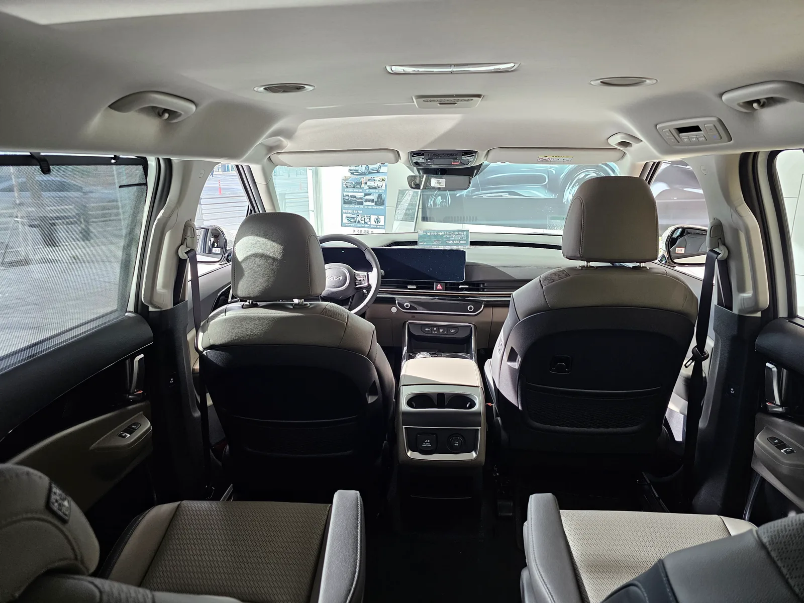
▲ 부분변경 카니발 뒷좌석에서 본 실내. 1열 센터콘솔 뒤쪽에 뒷좌석용 컵홀더와 전원 단자가 있다 ⓒ Damian B Oh, Wikimedia Commons (CC BY 4.0)
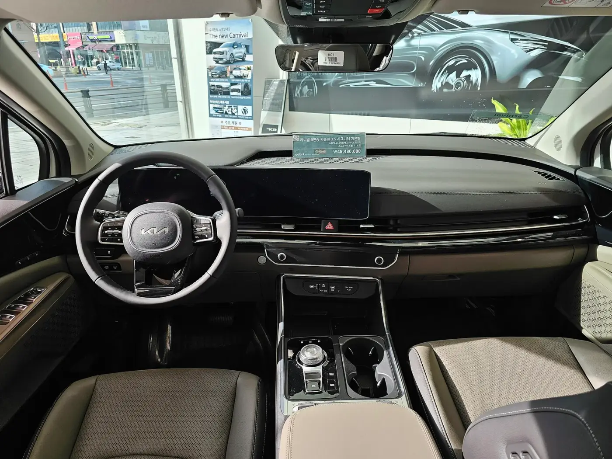
▲ 부분변경 카니발 1열. 계기판과 내비게이션을 하나로 이은 파노라믹 커브드 디스플레이가 들어갔다 ⓒ Damian B Oh, Wikimedia Commons (CC BY 4.0)
5. 하이리무진 — '6개월 대기'의 진짜 주인공
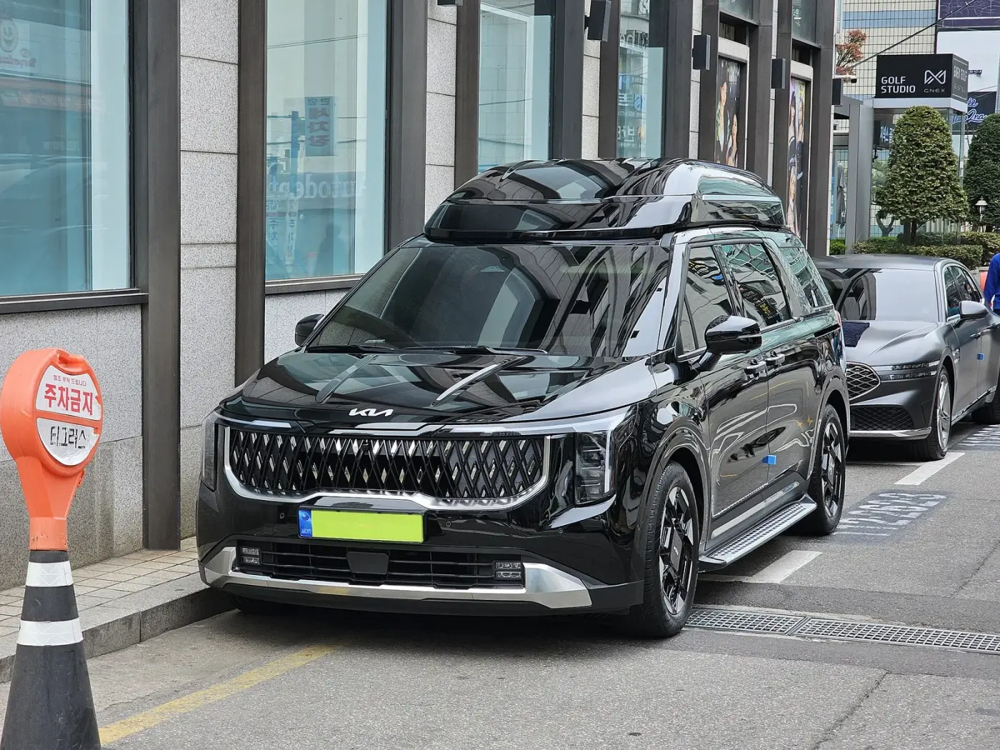
▲ 카니발 하이리무진 부분변경 모델. 지붕을 높인 하이루프 덕에 전고가 2,045mm까지 올라간다 ⓒ Damian B Oh, Wikimedia Commons (CC BY-SA 4.0)
"카니발은 6개월 기다려야 한다"는 말은 절반만 맞다. 오토트리뷴이 보도한 기아 9월 납기표(2026년 9월 3일 보도)를 보면 일반 카니발은 가솔린 5~6주, 하이브리드 약 2.5개월이다. 6개월은 전용 시트 수급 문제가 있는 하이리무진 4인승 이야기이고, 선호도가 낮은 사양은 2개월이 더 걸릴 수 있다. 하이리무진도 7·9인승으로 바꾸면 대기가 약 2개월로 줄어든다(기아 9월 출고 대기 기간 정리 참고).
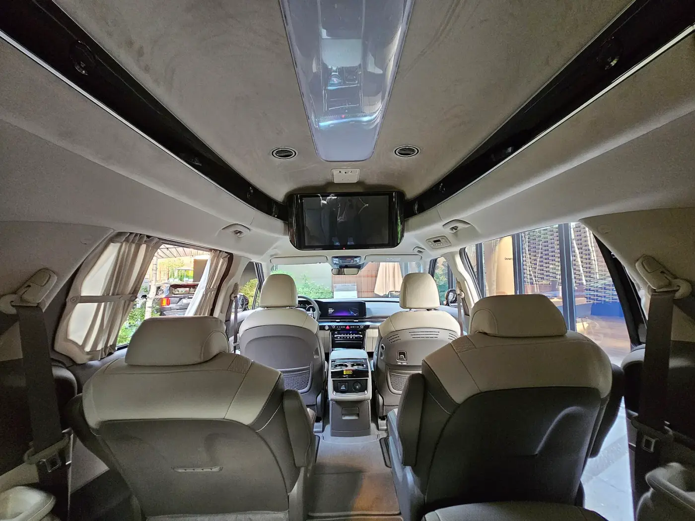
▲ 부분변경 이전(KA4 초기형) 카니발 하이리무진의 실내. 높은 천장과 천장에 매단 후석 모니터가 특징이다 ⓒ Damian B Oh, Wikimedia Commons (CC BY-SA 4.0)
2026년형 하이리무진은 후석 21.5인치 스마트 모니터와 4인승 전용 7인치 터치 컨트롤러에 새 화면 구성을 넣었고, 무드램프에 메모리 기능을 더했다. 3.5 가솔린에는 진입 트림인 9인승 노블레스가 새로 생겼다. 하이리무진은 아직 2026년형이 판매 중이며, 기아 홈페이지(2026년 9월 1일 기준) 가격은 아래와 같다.
| 인승·트림 | 3.5 가솔린 | 1.6 터보 하이브리드 |
|---|---|---|
| 9인승 노블레스 | 6,327만원 | 6,782만원 |
| 9인승 시그니처 | 6,667만원 | 7,122만원 |
| 7인승 시그니처 | 6,988만원 | 7,438만원 |
| 4인승 시그니처 | 9,461만원 | 9,911만원 |
하이리무진 4인승 하이브리드(9,911만원)는 토요타 알파드 프리미엄(8,790만원)보다 비싸다. 넓은 실내와 천장 높이를 원하면 하이리무진, 브랜드와 주행 질감을 원하면 알파드라는 구도가 된다. 알파드 평가는 알파드 시승기에 따로 정리했다.
6. 2027년형 가격표와 트림 추천
9월 현재 판매 중인 모델은 2026년 8월 27일 나온 2027년형이다. LED 리어 콤비네이션 램프가 전 트림 기본이 됐고, 1~3열 모두에 100W C타입 USB 단자가 들어갔다. 시그니처 기반 '블랙 에디션'도 새로 생겼다. 2026년형에서 이어진 기본 사양으로는 전 트림 스마트 파워테일게이트·전자식 룸미러, 노블레스부터 멀티존 음성인식·기아 디지털 키 2가 있다.
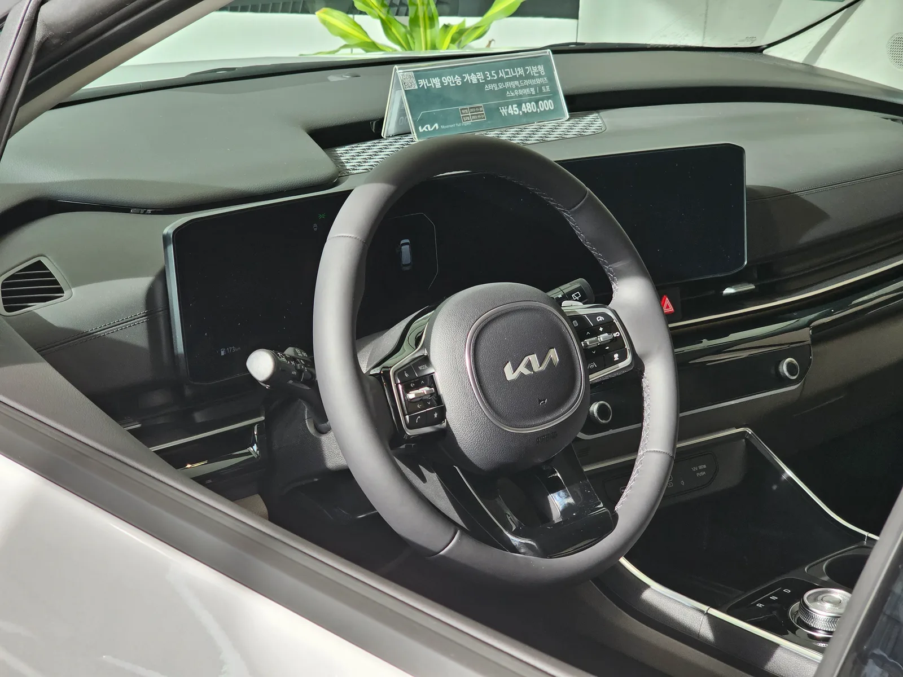
▲ 국내 전시장의 부분변경 카니발 9인승 가솔린 시그니처. 운전대 너머로 디지털 계기판과 중앙 화면이 하나로 이어진다 ⓒ Damian B Oh, Wikimedia Commons (CC BY 4.0)
| 인승 | 트림 | 3.5 가솔린 | 1.6 터보 하이브리드 |
|---|---|---|---|
| 9인승 | 프레스티지 | 3,686만원 | 4,141만원 |
| 노블레스 | 4,121만원 | 4,576만원 | |
| 시그니처 | 4,456만원 | 4,911만원 | |
| X-Line | 4,532만원 | 4,987만원 | |
| 블랙 에디션 | 4,592만원 | 5,047만원 | |
| 7인승 | 노블레스 아웃도어 | 4,283만원 | 4,733만원 |
| 노블레스 | 4,382만원 | 4,832만원 | |
| 시그니처 | 4,738만원 | 5,188만원 | |
| X-Line | 4,791만원 | 5,241만원 | |
| 블랙 에디션 | 4,851만원 | 5,301만원 |
📍 CarPrism 트림 추천
① 기본 추천 — 하이브리드 9인승 노블레스(4,576만원): 버스전용차로 조건을 갖추고, 디지털 키 2·멀티존 음성인식이 기본이다. 모터그래프도 출시 당시 부드러움과 고급감을 원하면 하이브리드 노블레스를 권했다.
② 아이 둘, 2열 편의 우선 — 하이브리드 7인승 노블레스(4,832만원): 릴렉션 시트가 꼭 필요 없다면 아웃도어(4,733만원)로 99만원을 아낄 수 있다.
③ 연 1만km 미만, 초기 비용 우선 — 가솔린 9인승 프레스티지(3,686만원): 주행거리가 짧으면 하이브리드 추가금 회수에 4~5년 이상 걸린다.
④ 의전·장거리 2열 — 하이리무진 7·9인승: 4인승은 6개월 대기와 9,000만원대 가격을 감수해야 한다.
7. 경쟁차 비교 — 스타리아·시에나·알파드
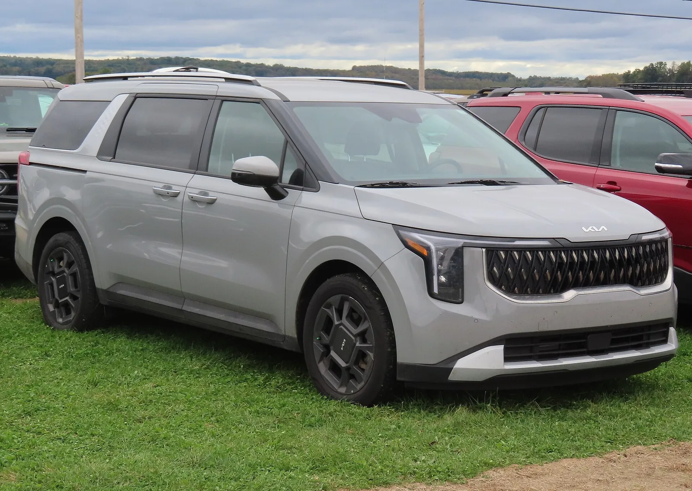
▲ 미국에서 판매되는 2025년형 카니발 하이브리드 EX. 미국 매체들은 주로 토요타 시에나, 혼다 오딧세이와 비교했다 ⓒ MercurySable99, Wikimedia Commons (CC BY-SA 4.0)
국내에서 카니발과 직접 붙는 차는 현대 스타리아이고, 위로는 토요타 시에나와 알파드가 있다. 해외 리뷰가 가장 많이 비교한 상대는 시에나였다. The Drive·Consumer Reports·Edmunds 모두 시에나의 연비가 앞선다고 짚었고(미국 EPA 복합 카니발 33mpg, 시에나 35~36mpg), Consumer Reports는 3열 편안함과 엔진 소음은 카니발 쪽이 낫다고 평가했다. 국내 가격 차이는 훨씬 크다. 시에나 하이브리드는 7,630만~7,700만원이라 카니발 하이브리드 최상위 트림보다 2,000만원 넘게 비싸다.
| 항목 | 기아 카니발 HEV | 현대 스타리아 HEV | 토요타 시에나 HEV | 토요타 알파드 HEV |
|---|---|---|---|---|
| 가격 | 4,141만~5,301만원 | 라운지 4,876만~5,021만원 투어러 3,876만원부터 (2025년 12월 발표, 7인승은 개소세 3.5%) | 7,630만~7,700만원 | 8,790만~1억 180만원 |
| 파워트레인 | 1.6 터보 HEV, 245마력 | 1.6 터보 HEV | 2.5 HEV, 246마력 | 2.5 HEV, 250마력 |
| 공인 복합연비 | 13.0~14.0km/L | 13.1km/L(발표 기준) | 13.7~14.5km/L | 13.5km/L |
| 인승 | 7·9인승 | 7·9인승(라운지), 투어러 9·11인승 | 7인승 | 7인승 |
| 구동 | 전륜 | 전륜 | 전륜 / E-Four 사륜 | E-Four 사륜 |
| 성격 | 승용 감각의 가족용 기본값 | 높은 천장·다인승, 상용 기반 | 연비·사륜, 수입 브랜드 | 의전·2열 VIP |
스타리아는 11인승 투어러와 높은 실내가 강점이지만 승합 기반이라 주행 질감은 카니발이 승용에 더 가깝다. 두 차의 제원·연비 비교는 카니발 하이브리드 vs 스타리아 하이브리드에 따로 정리했다. 정리하면 카니발은 스타리아보다 승용차답고, 시에나·알파드보다 2,300만원 이상 싸다. 이 가격 간격이 판매 순위를 떠받치는 가장 큰 이유다.
8. 오너들은 몇 점을 줬나
네이버 마이카 오너 평가를 인용한 오토트리뷴 보도(2026년 8월 28일)에 따르면 카니발 하이브리드의 오너 평점은 10점 만점에 9.15점이다. 항목별로는 거주성 9.6점, 디자인 9.6점, 주행 9.2점, 연비 9.1점, 가격 8.1점이었다. 앱 '마이클'의 하이브리드 오너 리뷰 709건 평균 만족도는 5점 만점에 4.71점이었다(2026년 9월 27일 조회).
| 거주성 | 디자인 | 주행 | 연비 | 가격 | 종합 |
|---|---|---|---|---|---|
| 9.6 | 9.6 | 9.2 | 9.1 | 8.1 | 9.15 |
오너 평가는 매체 시승기와 거의 같은 그림을 그린다. 공간·연비는 높게 쳤고, 불만은 풀옵션이면 5,000만원을 넘는 가격, 긴 대기, 과속방지턱·요철에서 남는 특유의 출렁임에 모였다. 서스펜션 평가는 엇갈려서, 미국 The Drive는 반대로 단단한 편이라고 봤다.
9. 충돌 안전 — 미국 IIHS 결과로 본 약점
시승기에서는 거의 다루지 않았지만, 가족용 미니밴이라면 확인할 대목이 있다. 미국 고속도로안전보험협회(IIHS)가 공개한 2026년형 카니발(미국 판매 사양) 평가에서 운전석·조수석 스몰 오버랩 전면 충돌은 '우수(Good)'였지만, 뒷좌석 승객 보호까지 보는 개정 모더레이트 오버랩 전면 충돌은 '미흡(Marginal)'이었다. 뒷좌석 더미의 머리·목과 가슴 지표가 각각 Marginal로 나왔다. 개정 측면 충돌은 '양호(Acceptable)'로, IIHS는 2025년형부터 B필러·앞뒤 도어·뒷좌석 레일에 구조 보강이 들어갔다고 적었다.
| 항목 | 결과 | 적용 연식(시험 차량) |
|---|---|---|
| 스몰 오버랩 전면(운전석·조수석) | Good | 2022~2026년형(2022년형 시험) |
| 개정 모더레이트 오버랩 전면 | Marginal (뒷좌석 머리·목, 가슴 Marginal) | 2023~2026년형(2023년형 시험) |
| 개정 측면 | Acceptable | 2025~2026년형(2025년형 시험) |
미국 평가라 국내 사양과 세부 장비가 다를 수 있지만, 2열·3열에 아이나 부모님을 자주 태운다면 안전벨트 착용과 카시트 장착을 더 꼼꼼히 챙길 만한 결과다.
10. 이런 가족에게 맞고, 이런 경우엔 안 맞는다
✅ 카니발 하이브리드가 잘 맞는 경우
· 연 1만5천km 이상 달리고, 가족 5~6명 이상이 자주 함께 탄다
· 명절·주말 장거리가 잦아 9인승 버스전용차로가 쓸모 있다
· 카시트 2개 이상을 달고도 3열에 어른이 앉아야 한다
· 수입 미니밴의 2,000만원 이상 가격 차이를 받아들이기 어렵다
⚠️ 다시 생각해 볼 경우
· 고속도로 추월 가속과 즉각적인 반응을 중시한다 → 3.5 가솔린을 시승해 비교해 볼 것
· 주행거리가 연 1만km 미만이다 → 하이브리드 추가금 회수가 느리다
· 대부분 1~2명만 타고 도심 주차가 잦다 → 전장 5,155mm·전폭 1,995mm는 지하주차장에서 부담이다
· 사륜구동이 필요하다 → 카니발은 전륜뿐이다(시에나·알파드는 사륜)
· 2열을 떼어내 화물칸처럼 쓰려 한다 → 2열 탈거가 번거롭다는 지적이 있다
11. 요약
국내외 시승기 12편을 모아 보면 카니발 하이브리드의 평가는 '효율·정숙성·승차감은 좋고, 가속은 굼뜨다'로 모인다. 연비 칭찬은 12곳 중 9곳에서 나왔고, 출발·재가속 지적은 4곳에서 나왔다. 오너 1만4천여 명의 평균 실연비는 13.79km/L로 공인 연비 수준이다.
2027년형 가격은 가솔린 3,686만원, 하이브리드 4,141만원부터다. 연 2만km를 달리면 하이브리드 추가금 455만원은 가솔린 대비 유류비 차이로 2년 남짓이면 메워진다. 기본 추천은 버스전용차로 조건을 갖춘 하이브리드 9인승 노블레스다.
'6개월 대기'는 하이리무진 4인승의 이야기이고, 일반 하이브리드는 9월 납기표 기준 약 2.5개월이다. 시에나·알파드보다 2,300만원 이상 싸면서 스타리아보다 승용차에 가까운 주행감, 이 조합이 카니발이 판매 상위권을 지키는 이유다.
![[시승기 종합] "인증 501km, 실제로는?"… 국내외 14편으로 본 기아 EV3의 숫자](../images/ev3review_gtline_black_seoul.webp)
![[시승기 종합] 풀체인지 앞둔 쏘렌토는 왜 아직 1위인가… 국내외 리뷰 15편이 꼽은 장점과 한계](../images/sorentoreview_hev_side_press.webp)